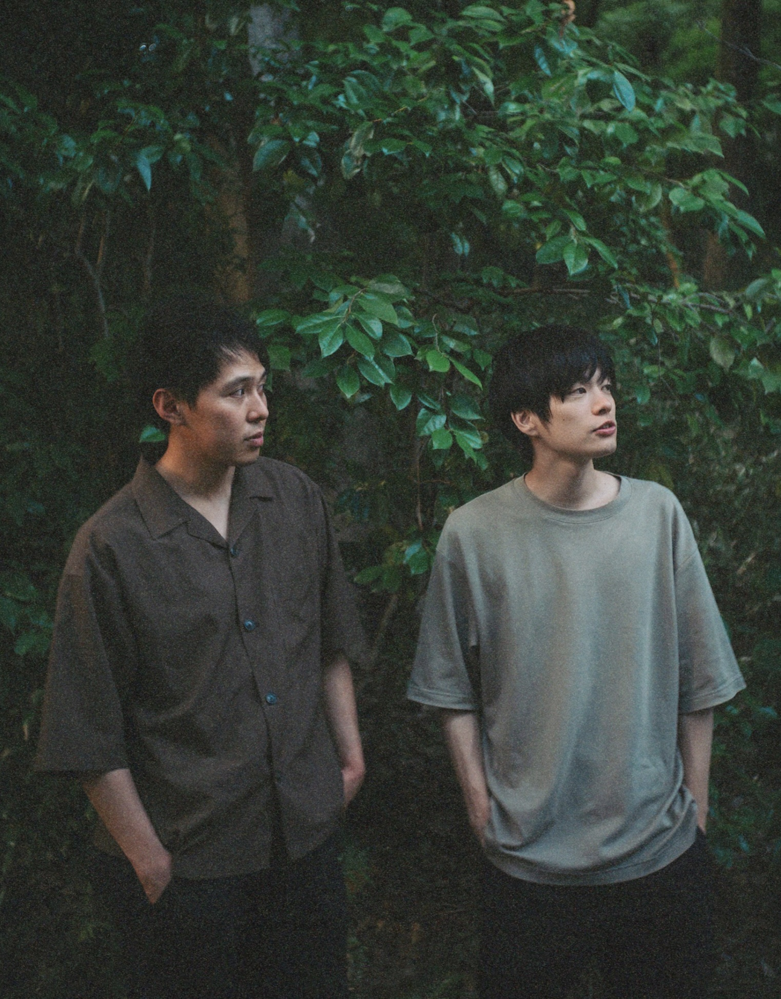

景色と情景
NEWS
LIVE
MOVIE
PROFILE
CONTACT
景色と情景
木漏れ日の中で
名前のない景色を
うたにしている
NEXT LIVE
LIVE INFO →
SCROLL

01
NEWS
2026.09.20
新しいサイトを公開しました
2026.09.15
10月のライブ情報を更新しました
2026.09.01
お知らせのタイトルがここに入ります
VIEW ALL
02
LIVE
NEXT LIVE
ライブ情報を読み込み中...
VIEW ALL
MOVIE
景色と情景 OFFICIAL YOUTUBE CHANNEL
about
“景色と情景”
VIEW MORE
CONTACT
お名前
メールアドレス
メッセージ
SEND